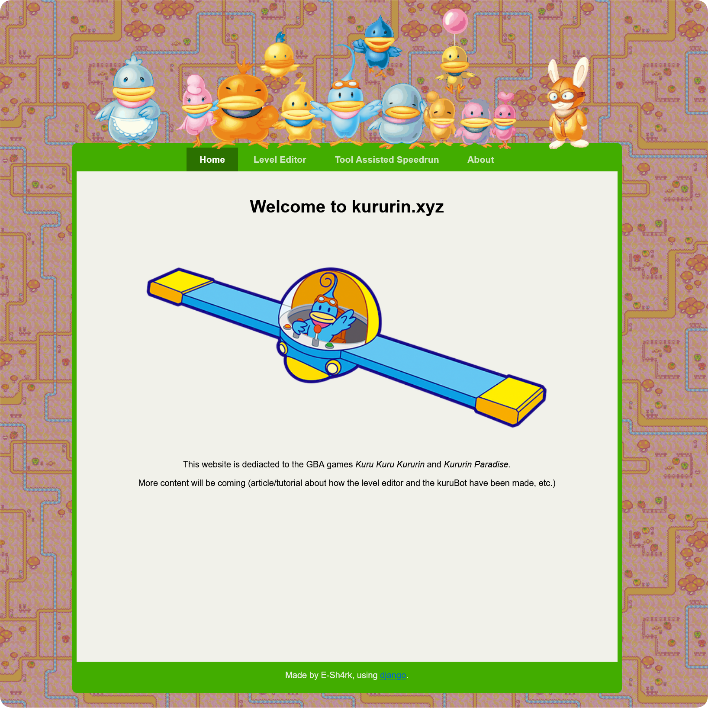
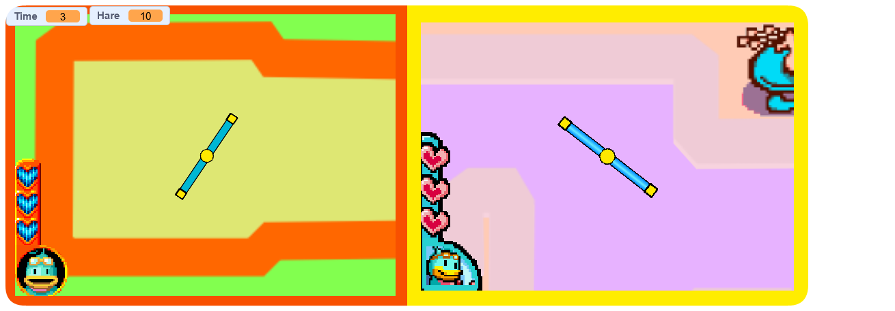
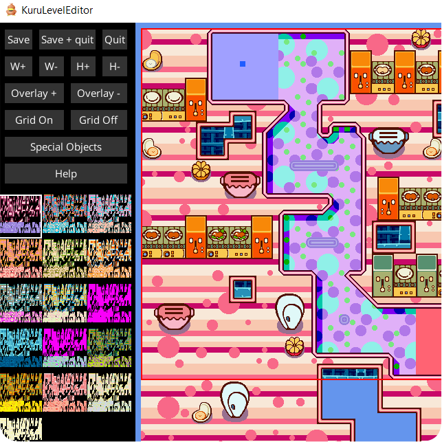
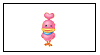

For any fan contents, links, pixels and more! Tell us about your project/fanwork for here, we're on fan discord server.
Links
Kururin fan discord server
A tiny server by speedrunner Callum, not only for speedrun, also memes are more!
Kururin.xyz
By speedrunner E-Sh4rk, include KururTool, and intros about TAS.
Kuru Kuru Kururin (Scratch remake)
Kururin Paradise (Scratch remake)
By Jayman357, which are two remakes for scratch, a blcok coding-based program.
They made mini Nintendo pixels, Include Kururin and Teacher Hare!
One FC2 website by a Japanese artist, Yutoridesi, who used to draw Kururin fanarts back 2000s, also is a fan artist of Drill Dozer, JRPGs etc.
A japanese nintendo fan who created fan midi music and fan fiction etc. Especially midi of Kururin series!
Downloads
Kururin desktop pal/shimeji (By me!)
can be download there!
KuruTool (by E-Sh4rk)
A level editor for Kuru Kuru Kururin and Kururin Paradise, requires .NET Core 3.1.
Can be download there! More introsFan stamps

↑↑Click these stamps for its original source↑↑
Youtube videos
Fan modding of Kururin Squash.